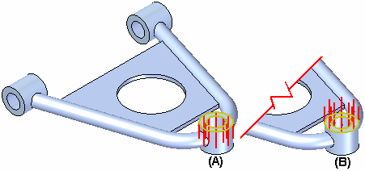
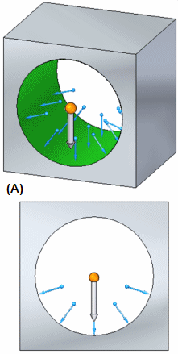
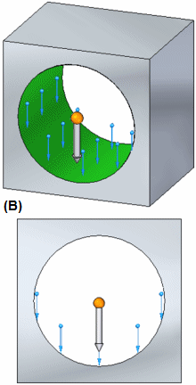
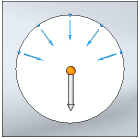
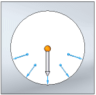
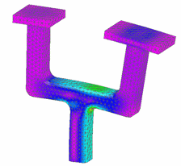
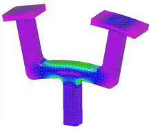

Loads command bar
The options displayed on the Loads command bar vary with the load type you have selected.
- Element Selection Criteria
-
Specifies which model geometry elements you want to select to apply the load to.
- Face
-
Specifies that faces and surfaces are selectable.
Face sets may also be selected using PathFinder.
- Edge/Corner
-
Specifies that model edges are selectable.
- Point/Vertex
-
Specifies that points and vertices are selectable.
- Feature
-
Specifies that features are selectable using PathFinder.
- Node
-
Specifies that beam element nodes are selectable. (Available for beam mesh types.)
- Curve
-
Specifies that beam curves are selectable. (Available for beam mesh types.)
Note:-
If possible, avoid applying a load on a point or curve, as it can concentrate stresses.
-
Split surfaces distribute loads and constraints more realistically.
- Function list
-
Selects a previously created function to be applied to the load when the study is solved.
You can use functions in thermal loads and in force loads for some types of structural studies.
- Function
-
Displays the New Function dialog box for you to define a new function. You can apply the function to the current load, and you can save the function for reuse in another load.
You can use functions in thermal loads and in force loads for some types of structural studies.
- Radiation Options
-
Displays the Radiation Load Options dialog box for you to choose the type of radiation load (Radiation to Space or Enclosed Radiation) and to change thermal radiation load processing default values.
- Pinned Constraint
-
Available only for displacement loads, this option automatically creates a pinned constraint on the same face, edge, or vertex where the load is placed.
Clear this option if you want to create a different type of constraint for the displacement load.
Note:This option satisfies the NX Nastran requirement for enforced displacement.
 Flip Direction
Flip Direction-
Changes the direction in which the load is applied by 180 degrees or to the opposite side.
Example:When applying a pressure load, a default load direction is selected (A). You can use the Flip Direction option on the command bar to control the load direction (B).

Example:A convection load on a solid face or surface is applied in the positive normal direction by default. In this case, flipping the direction to the opposite side means it:
-
Flips the load direction to the negative normal direction on a surface.
-
Flips the load direction so that it points inward on a solid face.
Note:For convection loads, the Flip Direction option is equivalent to the Femap option, On plate back face.
-
- Load Direction Type
-
Sets the method for specifying load direction.
-
 Along a Vector
Along a VectorAligns the load direction along a vector using the primary axis of the steering wheel. This vector is applied to all selected faces.
-
 Normal to Face
Normal to FaceIf one or more faces or surfaces are selected, changes the direction of the load symbols on each to be normal to that face.
Example:For a bearing load, the following illustrations show the effect of selecting and deselecting the Normal to Surface option.
(A) Normal to Surface=on
(B) Normal to Surface=off


-
 Components
ComponentsDefines load direction by specifying the individual X, Y, and Z direction components with respect to a coordinate system. You select a coordinate system using the Coordinate System list.
Choose the Components option to specify the load direction without using the steering wheel, or when you do not know the total magnitude of the load.
Note:Practice using this option. See Activity: Simplify a model and apply a load using X, Y, Z components.
-
- Traction load
-
For bearing loads, specifies that the load pulls on a surface instead of pushes on a surface.
The following illustrations show the effect of setting the Traction option to on and off.
(A) Traction=on (pull)
(B) Traction=off (push)


The Traction load option also changes the contact area.
- Total Load
-
When selected, distributes the load value proportionally across all of the selected entities based on their lengths or surface areas.
When deselected, the full load value is applied to each selected entity.
This option is available for force, torque, bearing, moment, and some thermal loads when multiple geometric entities of the same type are selected.
The load name in the Simulation pane and the load label in the graphics window provide feedback as to whether the load is distributed or not.
Example:Load name in the Simulation pane
Effect on the model
Force 1 (Total)

Force 1 (Per Entity)

- Hydrostatic Pressure–Free Space Selection
-
When active, identifies the free space within a container by specifying a point to define the maximum height of the fluid. You can click a keypoint on the geometry and enter a value in the Offset box, or you can select the XYZ Point option from the Keypoints list, click to specify a point, and then edit its coordinates in the X, Y, Z box.
- Hydrostatic Pressure–Gravity
-
When active, specifies the gravity type, direction, and magnitude. Options are
Along a Vector, for gravity normal to the defined point, or Components, when you want to define an angle that is not parallel or perpendicular to a face.Value—Use the adjacent dynamic input box to specify the gravity acceleration value. The default units are Length/Time², for example, 981.000 cm/sec².
-
Note:
For information about using these options, see Apply a hydrostatic pressure load.
 Symbol Color
Symbol Color-
Displays the Symbol Color dialog box so you can change the default load direction arrow color displayed in the graphics window.
Click a color box to select a predefined color, or click New to define a custom color.
The color is applied to existing symbols and to new load direction arrows.
 Symbol Size/Spacing
Symbol Size/Spacing-
Displays the Symbol Size dialog box so you can change the default load direction symbol size and spacing displayed in the graphics window.
- Symbol Size slider
-
Changes the symbol size of the load direction vector arrows for the current load. Symbol size is proportional. The default value is 50.
- Symbol Spacing slider
-
Changes the symbol spacing pattern of the load direction vector arrows for the current load. A lower value produces a denser symbol display. Conversely, a higher value produces a sparser symbol display.
- Show Label
-
Displays the load value label in the graphics window.
 Coordinate System
Coordinate System-
Specifies the coordinate system to use to define the load direction and magnitude. You can select a coordinate system from the list, or you can click the button and then click one of the available coordinate systems in the graphics window.
This option is available when you first select Components as the Direction Type.
Note:Practice using this option. See Activity: Simplify a model and apply a load using X, Y, Z components.
How do I
Define a loadActivity: Apply a bearing load
Activity: Apply a centrifugal load
Activity: Apply a torque load
Activity: Apply a body temperature load
Learn more
Creating and using loadsLoad labels and symbols
Structural and body loads
Thermal loads
External loads (imported loads)
Loads directional steering wheel
Look up more details
Thermal Load Options dialog boxRadiation Load Options dialog box
Color dialog box
Graphic Symbol Size dialog box